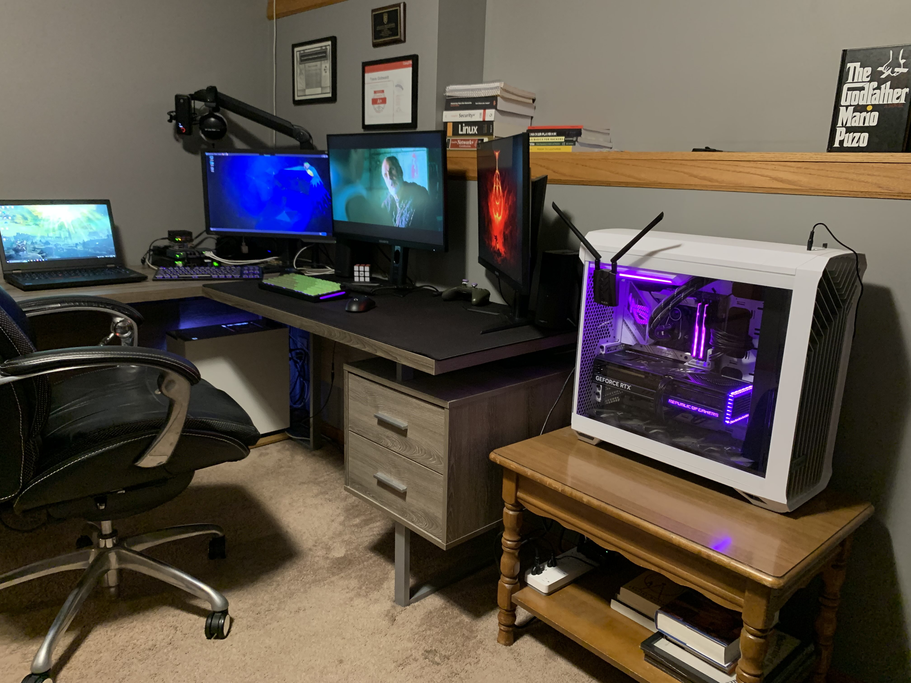
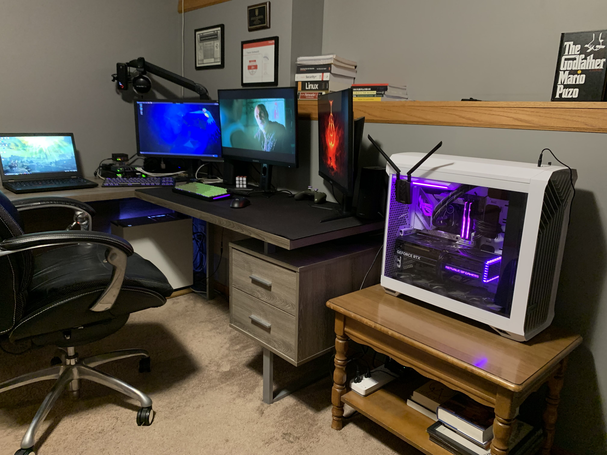

My projects
Labs
Scripting
NAS
Website
Linux
To build my home lab, I used a palo alto 440 firewall, two raspberry pi's, one with ubuntu and one with kali, a windows server, and a windows 10 desktop. I learned a bit about palo alto firewalls from competition in school, I've configured the palo alto 440 multiple times, many different ways. It is currently set up with a switch on one interface that has the ubuntu pi, and 2 windows desktops, with windows server in a vm on one of them. On a another interface I have a pi with kali linux on it to mess around a little with penetration testing in my home lab. I installed a windows server in a virtual box vm to serve as the primary domain controller. This server is responsible for managing a domain, providing centralized authentication and management of user accounts and policies. The windows 10 desktop I added to the domain was installed on virtual box as well. To enhance security and monitoring, I deployed security onion on a dedicated device. Additionally, I have replicated this same setup using a pfsense firewall as well as within a virtual box environment. This home lab setup is perfect for learning, testing, and experimenting with different parts of network security and management. It gives me a lot of hands-on experience.
I wrote a python script designed to help organize the downloads folder by automatically sorting files into specific folders based on their file extension. The script first defines the list of destination folders for different file extensions such as PDF, JPG, PNG, and DOCX files. Then it uses the `watchdog` library to monitor the downloads folder for new files. When a new file is detected, the `DownloadHandler` class gets the file's extension and moves the file to the appropriate folder. If a file with the same name already exists in the destination folder, the script adds +1 to the name of the new file to avoid overwriting the existing one. A function called `move_file` handles the actual moving of the file. It checks the file extension and moves the file to the correct folder. If the file type is not supported, it prints a message saying the file was ignored. The `get_destination_folder` function helps to determine the right folder based on the file extension. The main function, `start_observer`, initializes the watchdog observer to keep watching the downloads folder continuously. It keeps the script running and checking for new files until the user stops it manually. This script was a fun project to learn how to automate file organization and make the downloads folder easier to manage. You can check out all of my scripts on my github by clicking the link at the bottom of the page.
Using an old computer I had lying around and three spare 500GB drives, I decided to repurpose them into a functional storage solution using TrueNAS scale. One of the drives is used for the TrueNAS install, and the other 2 drives are mirrored for redundancy. So right now it only has one 500gb storage pool providing central storage for my home lab. I integrated it in my home lab with my palo alto firewall, a Windows Server, two Windows computers, and a Kali Linux machine for pen-testing.
Crafted from scratch using HTML and CSS, this portfolio website serves as a showcase of my cybersecurity journey, highlighting my skills, achievements, and projects. As I continue to learn and grow in the field of cybersecurity, this website will evolve with me. I will regularly update it with new projects and skills that I acquire.
Linux From Scratch Work In Progress

 
